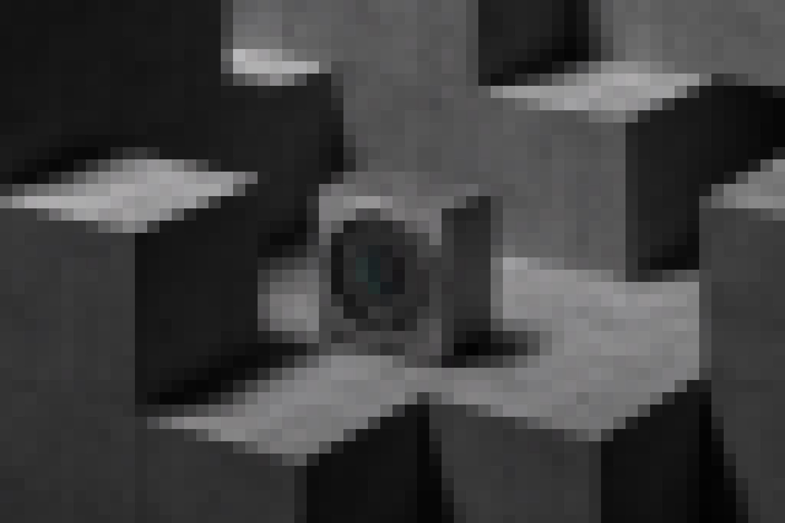
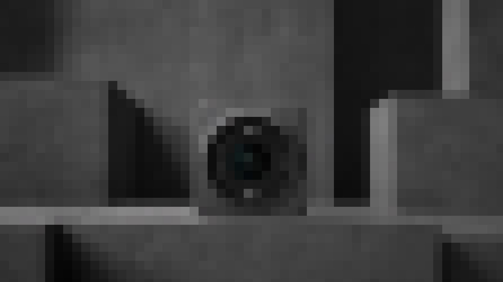
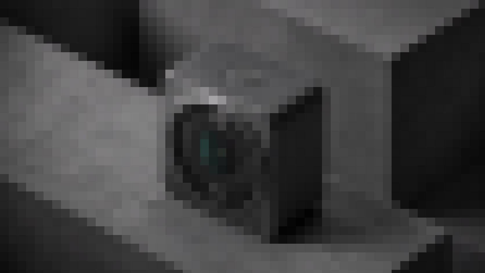

Built a wildfire information experience around the few facts people need first: location, proximity, confidence, and action.
Designing for crisis means earning every pixel.
This case study uses temporary production copy where final narrative is still being refined. The structure is ready for the final content pass: strategic context, behavioral constraint, interface evidence, and outcome.

A crisis map does not need to show everything. It needs to make the next correct action obvious.
The design direction prioritized speed, confidence, and legibility over feature density. Layers, toggles, and visual decoration were treated as risk unless they helped people understand what was happening and what to do next.
Operating Model
Temporary section headline for the product architecture behind WFCA Wildfire Map.
This placeholder copy is here to establish the production rhythm for the final case study. Use this section for the strategic shift, the constraint that mattered most, and the operating principle that governed downstream decisions.
At final content pass, this area should explain what changed in the product model, not simply what screens were produced. The goal is to read as executive-level product judgment supported by concrete design evidence.
Copy Layout 01
Framing the problem from market pressure to product behavior.
Use this block when the story needs a concise strategic setup before moving into artifacts. The first column can carry the decision, while the adjacent copy explains the consequence for users, operations, or the business.
Showing why the work mattered before showing how it looked.
This companion column can hold proof: research signal, product constraint, risk, or outcome. It keeps the reader moving across a deliberate argument rather than dropping them into process detail too early.
Copy Layout 02
Large thesis with two supporting copy blocks on the right.
This layout is useful for a high-level claim that needs two kinds of evidence. One paragraph can define the design principle, while the second explains how that principle changed execution.
It also works well for research synthesis, product strategy, or implementation constraints where the reader needs a clear hierarchy and a balanced scan path.
Decision
Preserve the behavior that already carries trust, then modernize around it.
Constraint
Every added capability had to justify its cost in comprehension, operation, and maintenance.
System
A shared operating grammar lets project-specific details change without fragmenting the portfolio.
Outcome
The final page can show product judgment first, then support it with visual proof.
Copy Layout 04
A sequence layout for research, product decisions, or build phases.
01
Establish the operational environment and identify which behaviors already carry trust.
02
Translate those behaviors into interface rules that can scale without fragmenting the system.
03
Validate the rules in context, then turn the proven behavior into implementation-ready documentation.
The strongest portfolio pages read like product judgment supported by evidence, not a gallery with captions.
This layout can hold a senior-level interpretation of the work. It gives room for a strong claim, then supports it with focused explanation that keeps the reader oriented.
Use it near the end of a case study when the page needs to consolidate lessons, outcomes, or what the project proves about the way you lead product design.


Sticky editorial note for an important product decision.
This pinned block can hold a concise explanation while the image column carries detailed visual proof. It is designed for director-level reading: fast thesis, then evidence.